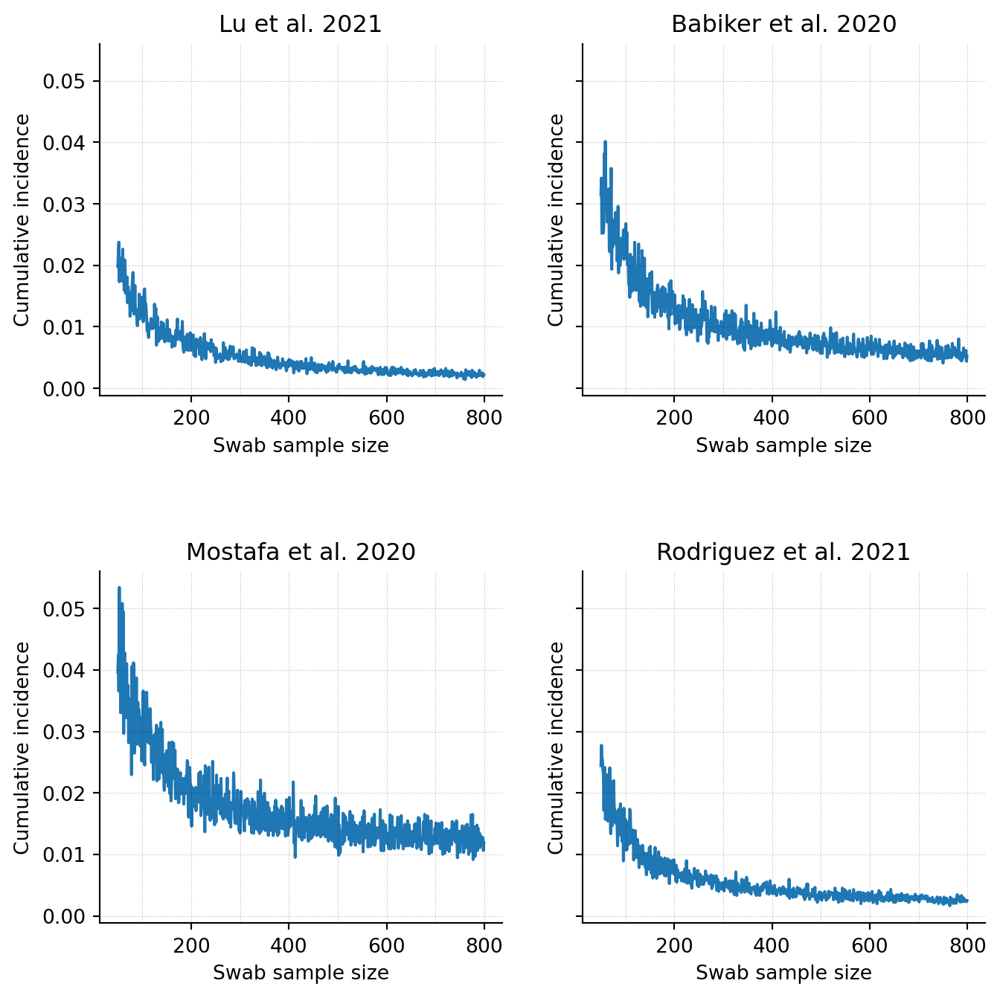
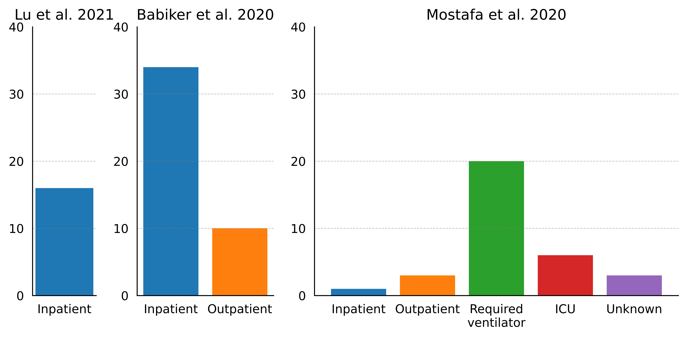
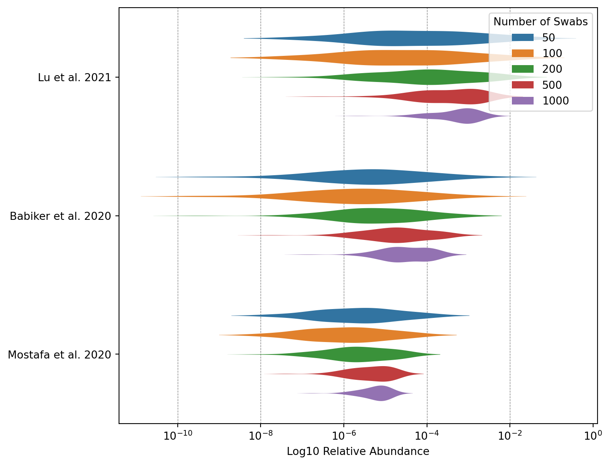

The NAO aims to detect stealth pathogens at an early stage. Initially we mostly thought about detecting pathogens in wastewater, but we’ve recently expanded our research to also cover air sampling and created a more general framework with which to think about the promise of different sampling strategies. In the same vein, Jeff Kaufman wrote a piece that provides an initial estimate of the sensitivity of swab sampling.
Though this initial piece of research is a good starting point, it was only based on one paper, Lu et al. 2023. In this post, we want to think about how to use existing studies of SARS-CoV-2 relative abundance in swabs to better model the likely performance of pooled swab sampling of asymptomatic individuals. In the sampling program we envision we would collect anterior nasal swabs (heretofore called nasal swabs) from a random sample of people at an airport terminal or some other public location that is visited by a large number of people everyday. Most of these individuals will either be asymptomatic or only slightly sick (otherwise they’d stay home).
Before we think further about how to use existing studies data to model the likely performance of pooled swab sampling, let’s look at the data itself.
Lu et al. 2023
Jeff originally wrote a post that is based on Lu et al. 2021, which sampled Chinese inpatients with oropharyngeal swabs (throat, or OP swabs). COVID-19 abundance in Lu et al. 2021 is fairly high with a mean relative abudance of 2x10-3 (n=16).
Figure 1: SARS-CoV-2 qPCR CT vs SARS-CoV-2 RA. Data from Lu et al. 2021.
As was previously done, we can use this data to estimate the expected relative abundance of a pooled swab sample at a given incidence. For instance, let’s say we get a random set of swabs from a population which contains 1% sick people. On average 1% of all swabs will return positive. If we vary the number of swabs, ranging from 50 to 800, we get a median relative abundance of 1e-07 at 50 swabs and up to 6e-04 at 800 swabs (Fig. 2).
Figure 2: Simulated RA(1%) for Lu et al. 2021. Assuming swab sample sizes ranging from 50-800.
Additional SARS-CoV-2 studies
Insert table.
Lu et al. 2021 is a relatively small sample of inpatients in Wuhan. To get a better idea of the likely performance of pooled swab sampling we can look at further studies. Limiting ourselves to COVID-19, there is Babiker et al. 2020, which sampled poth inpatients and outpatients using nasopharyngeal swabs, and Mostafa et al. 2020, which sampled nasal swabs from patients which range from being outpatients to individuals that required a ventilator. The average relative SARS-CoV-2 relative abundance for Babiker et al. 2020 is 2x10-4 (n=44), 10-4 for Mostafa et al. 2020 (n=33), and 1.2x10-3. This compares to a relative abudance of 2x10-3 (n=16) in Lu et al. 2021. (Fig. S1)
Let’s assume we are performing a swab sampling program where we take 100 swabs a day. If we take the relative abundance values of these three studies as the relative abundance we’d expect to see in a swab sampling program, pooled sequencing at 1% cumulative incidence would return 2.6x10-5 for Lu et al. 2021, 10-6 for Babiker et al. 2020, and 1x10-6 for Mostafa et al. 2020 (Fig. 3, see Fig. S2 for other swab sample sizes).
Code
df_np_babiker, df_np_rodriguez, df_op_lu, df_np_mostafa = return_studies()n_swabs = [1000, 500, 200, 100, 50]studies = ["Lu et al. 2021","Babiker et al. 2020","Mostafa et al. 2020","Rodriguez et al. 2021",]violin_df = pd.DataFrame()for i, (study, positive_ras) inenumerate(zip( studies, [df_op_lu_ras, df_np_babiker_ras, df_np_mostafa_ras, df_np_rodriguez_ras], )): study_df = simulate_complex(1000, positive_ras, n_swabs) study_df_log = np.log10(study_df) study_df_log_melted = study_df_log.reset_index().melt( id_vars=["index"], var_name="Number of Swabs", value_name="Log10 Relative Abundance", ) study_df_log_melted["Study"] = study violin_df = pd.concat([violin_df, study_df_log_melted], ignore_index=True)violin_df_100_swabs = violin_df[violin_df["Number of Swabs"] ==100]fig, ax = plt.subplots(figsize=(10, 4.5), dpi=600)sns_default_colors = sns.color_palette()sns.violinplot( ax=ax, data=violin_df_100_swabs, x="Log10 Relative Abundance", y="Study", bw=0.5, palette="viridis", scale="width", inner=None, width=0.5,)ax.set_ylabel("")ax.xaxis.set_major_formatter(ticker.FuncFormatter(format_func))for x in np.arange(-10, 0, 2): ax.axvline(x=x, color="black", linestyle="--", linewidth=0.5, alpha=0.5, zorder=-1)ax.spines["right"].set_visible(False)ax.spines["top"].set_visible(False)

Figure 3: Simulated RA(1%) for Lu et al. 2021, Babiker et al. 2020, and Mostafa et al. 2020. Assuming a swab sample n=100.
Getting toward a more representative sample
The studies we’ve looked at all have issues that keep them from being representative of the sort of population sampling we’re considering. First, they mostly sampled hospitalized patients, but in our hypothetical future sampling program we’d expect to mostly be getting people with no or only mild symptoms. Since viral loads are generally higher in more severely ill patients, this alone would tend to make the numbers from these studies overestimates. Even if we have qPCR values from outpatients, these patients still show symptoms and thus still need adjusting to resemble asymptomatics. Second, there is the issue that viral loads are highest just when symptoms begin, and then fall over time. If a study is looking at patients several days after symptom onset then it will underestimate the viral loads we’d see in a random sample. Finally, the studies used different swab types. Berenger et al. (2020) found that nasopharyngeal swabs gave Ct values a median of 3.2 points lower than throat swabs. Assuming this holds across studies, we need to adjust studies that do not use our target swab type to arrive at an apples-to-apples comparison with the nasal-only swabs we’re considering. Let’s look at these different issues in turn.
Inpatients vs Outpatients
The first factor we can account for is hospitalization status. Most of the qPCR/MGS studies we looked at contain a mix of outpatients, inpatients, and ICU patients (Fig. 4).
Code
df_np_babiker, df_np_rodriguez, df_op_lu, df_np_mostafa = return_studies()order = ["Inpatient", "Outpatient", "Required\nventilator", "ICU", "Unknown"]lu_counts = df_op_lu["patient_status"].value_counts().reindex(order)babiker_counts = df_np_babiker["patient_status"].value_counts().reindex(order)mostafa_counts = df_np_mostafa["patient_status"].value_counts().reindex(order)rodriguez_counts = ( df_np_rodriguez["patient_status"].value_counts().reindex(order).dropna())fig, axs = plt.subplots(1, 4, figsize=(12, 4), width_ratios=[0.7, 1.5, 4, 2.4], sharey=True, dpi=800)colors = sns.color_palette()color_dict = {"Inpatient": colors[0],"Outpatient": colors[1],"Required\nventilator": colors[2],"ICU": colors[3],"Unknown": colors[4],}axs[0].bar(lu_counts.index, lu_counts.values, color=color_dict["Inpatient"], width=0.5)axs[0].set_title("Lu et al. 2021")axs[0].set_ylabel("Count")axs[0].set_ylim(0, max(lu_counts.values) +5)axs[1].bar( babiker_counts.index, babiker_counts.values, color=[color_dict[x] for x in babiker_counts.index], width=0.8,)axs[1].set_title("Babiker et al. 2020")axs[1].set_ylim(0, max(babiker_counts.values) +5)axs[2].bar( mostafa_counts.index, mostafa_counts.values, color=[color_dict[x] for x in mostafa_counts.index],)axs[2].set_title("Mostafa et al. 2020")axs[2].set_ylim(0, max(mostafa_counts.values) +10)axs[2].set_yticks(np.arange(0, max(mostafa_counts.values) +30, 10))axs[3].bar( rodriguez_counts.index, rodriguez_counts.values, color=[color_dict[x] for x in rodriguez_counts.index],)axs[3].set_title("Rodriguez et al. 2021")axs[3].set_ylim(0, max(rodriguez_counts.values) +5)axs[3].set_yticks(np.arange(0, max(rodriguez_counts.values) +10, 5))for ax in axs: ax.spines["right"].set_visible(False) ax.spines["top"].set_visible(False) ax.tick_params(axis="y", which="both", left=False, right=False, labelleft=True) ax.tick_params( axis="x", which="both", top=False, bottom=False, labeltop=False, labelbottom=True, ) ax.set_ylabel("")for x in np.arange(0, 40, 10): ax.axhline( y=x, color="grey", linestyle="--", alpha=0.5, linewidth=0.5, zorder=-1 )plt.tight_layout()plt.show()

Figure 4: Patient composition of Lu et al. 2021, Babiker et al. 2020, and Mostafa et al. 2020.
When making adjustements we can’t just look at a study that has only sampled outpatients, and then adjust an inpatient study downward to match. This is because while Ct values from the same qPCR setup and protocols are typically comparable, differences in methodology often lead to systematic differences in the values obtained (see Appendix 2 for details). A more robust approach would be to look for studies that report Ct values for both asymptomatic patients and the same patient type as that covered by the qPCR and metagenomic sequencing studies we’re drawing from.
There are two studies that have done this and looked at the average qPCR cycle threshold (CT) values in swabs of inpatients and outpatients. Souverein et al. 2022 looked at a dataset of 20207 positive COVID-19 tests that were all performed at two public health testing facilities in the Netherlands. Patients were subsequently classified as inpatients or outpatients if they got admitted to a hospital within 30 days of their initial test. The results from this study are thus somewhat imperfect: They do not measure the CT value of current in-/outpatients but rather show the CT value difference between patients who went on to be hospitalized or not. Still, based on this data the CT value difference between individuals who remained outpatients and individuals who went on to become inpatients was -1.3 (25.0-26.3), where inpatients had lower viral loads (and thus a higher CT value). Knudtzen et al. 2021 more closely resembles what we are looking for. Here, researchers identified the qPCR CT values of outpatients (n=87) through an outpatient cohort study and the values of hospitalized patients (n=82) through medical records. The CT value difference was -2.3 (24.6 - 26.9) again in favor of outpatients. Again there some limitations to study because researchers used three different qPCR assays, and there is no data on patient/qPCR matches. Finally, two of the MGS studies also included both inpatients and outpatients at meaningful numbers (Babiker at al. 2020, Rodriguez et al. 2021). Babiker et al. 2020 included 10 outpatients and 34 inpatients. All nasopharyngeal swab samples were analyzed with qPCR by the researchers themselves, presumably using the same protocol for all samples. Looking at this data we find that CT values in inpatients are 1.15 points lower (25.35-24.25). For Rodriguez et al. 2021, both outpatients (n=42) and inpatients (n=17) were tested with the same qPCR assay (RealStar SARS-CoV-2 RT-PCR Kit, Altona Diagnostics, Hamburg, Germany). Here the average CT value in inpatients was 6 CTs higher in outpatients (24-30).
Without weighing the studies the inpatients have an average qPCR result that is ~2.1 CT values higher. #Still need to check how this changes once we account for day since sampling first.
Once we’ve adusted for the inpatient population we still need to account for individuals being symptomatic. To make this symptomatic to asymptomatic adjustement, we found four different studies. Hall et al. 2022 looked at the results of a university testing program that tracked symptoms upon taking the test and thereafter. The median CT of asymptomatic individuals was around 8 points higher, with symptomatic patients showing a CT value of 21.8 (N1) and 21.4 (N2) compared to 29.9 (N1) and 30.0 (N2) for asymptomatics. Long et al. 2020 compared 37 asymptomatic individuals to 37 symptomatic patients and found no clear difference in median CT values between the two groups, with the median symptomatic CT value for ORF1ab being 1 point lower and the median value for N being 0.9 higher compared to asymptmatics. Lee et al. 2021 studied patients in an isolation facility. They do not provide raw data or median values, but report there was no qPCR CT value difference between symptomatic and asymptomatic patients in their study. Let’s treat this as zero for now (#FIXME). Finally, Zhou et al. 2020 investigated 31 patients who were asymptomatic on admission, of which 22 developed symptoms later (pre-symptomatic) and 9 remained asymptomatic. Here the median CT of symptomatics was 4.5 points lower.
Again, without weighing the studies the average CT value difference of symptomatic or pre-symptomatic is ~4.3 CT values lower than that of individuals who remain asymptomatic.
If we assume that we will run a sampling program based on anterior nasal swabs we need to adjust the relative abundance studies that do not use this swab type. Luckily there are a number of studies that provide data on the CT value differences in paired samples using different swabs.
Nasopharyngeal vs Nasal swabs
Both Babiker et al. 2020 and Rodriguez et al. 2021 use nasopharyngeal swabs. We can adjust for their swab type by looking at the CT value difference between nasopharyngeal and nasal swabs in five studies which performed paired sampling and SARS-CoV-2 qPCR of the same patients: Patriquin et al. 2022, McCulloch et al. 2020, Pere et al 2020, Kojima et al. 2020, and Tu et al. 2020. Unlike for some of the studies above we have the individual data points for each sample pair. By computing the CT difference within each pair, and averaging these differences we get an average CT difference for ecah study (see table Y). Averaging these values again without weighing studies we get an average difference of -1.82 CT values, where negative values mean that nasopharyngeal swabs have lower CT values and are thus more sensitive.
Nasal was self-collected, NP was professionally collected
Oropharyngeal vs Nasal swabs
Lu et al. 2021 uses oropharyngeal swabs. We can adjust this swab type by looking at the studies Goodall et al. 2022 and Berenger et al. 2020. We have raw data for Goodall et al. 2022, and median CT values for Berenger et al. 2022. Averaging the qPCR results for qPCR target N and ORF1a for each sample, Goodall et al. 2022 showed an average CT value difference (OP-Nasal) of 1 Ct value in favor of nasal swabs. In Berenger et al. 2022 the difference between medians (OP - NP) was 1.1 (E gene) and 0.8 (RdRp). This gives an across-study average difference of 1 CT value, maing OP swabs less sensitive than nasal swabs.
We can now adjust the different CT/MGS data points across all studies to arrive at values that are closer to the sample type we aim for: a nasal swab from an asymptomatic person. For this we can pull in data points from all four existing qPCR/MGS studies, dropping samples that are from settings where we have not collated studies for extrapolation (e.g., ICU or individuals on ventilators.) Only keeping inpatient and outpatients, we drop 44 Rodriguez et al. 2021 samples, and 29 Mostafa et al. samples.
Now we can adjust inpatient samples by the outpatient to inpatient factor we identified previously (2.1 CT values, link to relevant section).
Code
df_np_babiker, df_np_rodriguez, df_op_lu, df_np_mostafa = return_studies()df_np_babiker["Study"] ="Babiker et al. 2020"df_np_rodriguez["Study"] ="Rodriguez et al. 2021"df_op_lu["Study"] ="Lu et al. 2021"df_np_mostafa["Study"] ="Mostafa et al. 2020"composite_df = pd.concat( [df_np_babiker, df_np_rodriguez, df_op_lu, df_np_mostafa], ignore_index=True)composite_df = composite_df[ composite_df["patient_status"].isin(["Inpatient", "Outpatient"])]inpatient_adjustment_factor =2.1asymptomatic_adjustment_factor =4.3np_adjustment_factor =1op_adjustment_factor =-1# Apply the adjustment to Inpatient samplescomposite_df["adjusted_scv2_ct"] = composite_df["scv2_ct"]composite_df.loc[ composite_df["patient_status"] =="Inpatient", "adjusted_scv2_ct"] += inpatient_adjustment_factorcomposite_df["adjusted_scv2_ct"] = ( composite_df["adjusted_scv2_ct"] + asymptomatic_adjustment_factor)composite_df.loc[ composite_df["swab_type"] =="NP", "adjusted_scv2_ct"] += np_adjustment_factorcomposite_df.loc[ composite_df["swab_type"] =="OP", "adjusted_scv2_ct"] += op_adjustment_factorcomposite_df["scv2_ra_logged"] = composite_df["scv2_ra"].apply(np.log10)result = linregress(composite_df["scv2_ct"], composite_df["scv2_ra_logged"])composite_df["adjusted_scv2_ra_logged"] = ( result.intercept + result.slope * composite_df["adjusted_scv2_ct"])fig, axs = plt.subplots(1, 3, figsize=(20, 10), sharey=True)composite_df["adjusted_scv2_ra_logged"] = ( result.intercept + result.slope * composite_df["adjusted_scv2_ct"])composite_df["adjusted_scv2_ra_logged_stderr"] = np.sqrt( result.intercept_stderr**2+ (result.stderr * composite_df["adjusted_scv2_ct"]) **2)# Generate random noise based on the standard errorsnp.random.seed(42) # Set a random seed for reproducibilitynoise = np.random.normal(loc=0, scale=composite_df["adjusted_scv2_ra_logged_stderr"])# Add the noise to the adjusted log relative abundance valuescomposite_df["adjusted_scv2_ra_logged_with_noise"] = ( composite_df["adjusted_scv2_ra_logged"] + noise)# Create scatter plotssns.scatterplot( data=composite_df, y="scv2_ra_logged", x="scv2_ct", palette=sns_default_colors, s=70, hue="Study", style="Study", ax=axs[0],)sns.scatterplot( data=composite_df, y="scv2_ra_logged", x="adjusted_scv2_ct", palette=sns_default_colors, s=70, hue="Study", style="Study", ax=axs[1],)sns.scatterplot( data=composite_df, y="adjusted_scv2_ra_logged_with_noise", x="adjusted_scv2_ct", palette=sns_default_colors, s=70, hue="Study", style="Study", ax=axs[2],)for ax in axs:# ax.set_yscale('log') ax.set_xlabel("")# ax.set_xlim(x_lim)# y_lim_adjusted = (y_lim[0], y_lim[1] * 1.05) # Adjust upper limit to ensure top dot is fully displayed# ax.set_ylim(y_lim_adjusted) ax.invert_xaxis() ax.spines["right"].set_visible(False) ax.spines["top"].set_visible(False) ax.tick_params(axis="y", which="both", left=False, right=False, labelleft=True) ax.set_ylabel("Relative Abundance")# for x in np.arange(15, 40, 5):# ax.axvline(x=x, color='grey', linestyle='--', alpha=0.5, linewidth=0.5)# for y in range(-7, 1, 1):# log_y = 10**y# ax.axhline(y=log_y, color='grey', linestyle='--', alpha=0.5, linewidth=0.5)
/var/folders/gm/txqg8t5d57z34sqfjcvpcjj00000gn/T/ipykernel_84269/1088959826.py:51: UserWarning:
The palette list has more values (10) than needed (4), which may not be intended.
/var/folders/gm/txqg8t5d57z34sqfjcvpcjj00000gn/T/ipykernel_84269/1088959826.py:52: UserWarning:
The palette list has more values (10) than needed (4), which may not be intended.
/var/folders/gm/txqg8t5d57z34sqfjcvpcjj00000gn/T/ipykernel_84269/1088959826.py:53: UserWarning:
The palette list has more values (10) than needed (4), which may not be intended.
Figure S1: SARS-CoV-2 qPCR CT vs SARS-CoV-2 RA. Top Figure: Throat Swabs. Data from Lu et al. 2021. Middle Figure: NP Swabs. Data from Babiker et al. 2020. Bottom Figure: Nasal Swabs. Data from Mostafa et al. 2020.
Code
n_swabs = [1000, 500, 200, 100, 50]studies = ["Lu et al. 2021", "Babiker et al. 2020", "Mostafa et al. 2020"]violin_df = pd.DataFrame()for i, (study, positive_ras) inenumerate(zip(studies, [df_op_lu_ras, df_np_babiker_ras, df_np_mostafa_ras])): study_df = simulate_simple(positive_ras, n_swabs) study_df_log = np.log10(study_df) study_df_log_melted = study_df_log.reset_index().melt( id_vars=["index"], var_name="Number of Swabs", value_name="Log10 Relative Abundance", ) study_df_log_melted["Study"] = study violin_df = pd.concat([violin_df, study_df_log_melted], ignore_index=True)fig, ax = plt.subplots(figsize=(8, 7))sns_default_colors = sns.color_palette()sns.violinplot( ax=ax, data=violin_df, x="Log10 Relative Abundance", y="Study", hue="Number of Swabs", bw=0.5, palette=sns_default_colors, scale="width", inner=None, width=0.7, gap=0.2, linewidth=0,)ax.set_ylabel("")ax.xaxis.set_major_formatter(ticker.FuncFormatter(format_func))for x in np.arange(-10, 0, 2): ax.axvline(x=x, color="black", linestyle="--", linewidth=0.5, alpha=0.5, zorder=-1)

Figure S2: Simulated RA(1%) for Lu et al. 2021, Babiker et al. 2020, and Mostafa et al. 2020. Assuming swab sample sizes of 50, 100, 200, 500, and 1000.
Appendix 2: The feasibility of comparing qPCR values between studies
Other,to remove
Simulating a pooled swab sample of asymptomatic individuals
Other pathogens
Influenza A
Swab samples were received from ambulatory patients with signs of influenza virus infection
Samples include 11 swabs, 5 sputum, 7 BAL fluid, 1 tracheal secretion.
We can use the above data to replicate research by Jeff Kaufman. Let’s say we get a random set of swabs from a population which contains 1% sick people. On average 1% of all swabs will return positive, and the relative abundance in that positive sample is picked randomly among the relative abundances given in five different studies.
Figure 5: Simulated detection capability of pooled swab sampling. Left Figure: Throat Swabs. Data from Lu et al. 2021. Right Figure: Nasopharyngeal Swabs. Data from Babiker et al. 2020.
Next steps
Pull in additional qPCR studies.
Read into research on comparing CT values across studies and search for standard curves in existing papers.
Lay out what you would do if you had standard curves available.
Create a figure for the remaining viruses not covered in Figure 3.
Source Code
---title: "Modeling routine swab sampling of asymptomatic individuals"subtitle: "Sequencing swabs in non-hospital settings could offer cheap and sensitive pathogen early detection"author: "Simon Grimm"date: 2024-04-06format: html: code-fold: true code-tools: true code-link: true df-print: pagededitor: visualtoc: truejupyter: venvfilters: - black-formattercap-location: bottomexecute: cache: true---```{python}#| label: load-packages#| include: falseimport seaborn as snsimport pandas as pdimport matplotlib.pyplot as pltimport numpy as npfrom collections import defaultdictimport randomimport mathfrom scipy.stats import gmeanimport matplotlib.ticker as tickerfrom scipy.stats import linregress``````{python}#| label: define-functions### Olddef simulate_simple(positive_ras, n_swab_range): FRAC_SICK =0.01 SIMULATIONS =10000def probabilistic_round(x):returnint(math.floor(x + random.random()))def simulate_once(n_swabs): n_sick = probabilistic_round(FRAC_SICK*n_swabs)ifnot n_sick:return0 ra =0for _ inrange(n_sick): ra += random.choice(positive_ras)return ra / n_swabsdef simulate_many(n_simulations, n_swabs): RAs = []for _ inrange(n_simulations): RAs.append(simulate_once(n_swabs)) RAs.sort()return [RAs[probabilistic_round(len(RAs)*percentile/100)]for percentile inrange(100)] data = defaultdict(list)for n_swabs in n_swab_range:for percentile, ra inenumerate(simulate_many(SIMULATIONS, n_swabs)): data[percentile].append(ra) df = pd.DataFrame(data).T df.columns = n_swab_range# if there is only one column, return as a seriesiflen(df.columns) ==1:return df[df.columns[0]]else:return df### Newdef simulate_complex(n_simulations=1000, shedding_values=0.01, sample_populations=[100]): results = defaultdict(list)for sample_pop in sample_populations:for _ inrange(n_simulations): results[sample_pop].append(simulate_once(sample_pop, shedding_values))for key, values in results.items(): results[key] =sorted(values) df = pd.DataFrame(results)return dfdef simulate_once(sample_pop=100, shedding_values=[0.01]): day =0 population =1e10 processing_delay =4 n_sites =1 n_min_observations =10# check what this means. epsilon =0.000001 genome_length_covid =30_000 sample_population =100 sample_depth =1e10 read_length_usable =300# Novaseq X sigma_shedding_values =0.05 doubling_time =3 cv_doubling_time =0.1 shedding_duration =5 sigma_shedding_duration =0.05 should_sample = {0: False,1: False,2: True,3: False,4: False,5: False,6: False, } should_sequence = {0: False,1: False,2: True,3: False,4: False,5: False,6: False, } r = math.log(2) / get_input_cv(doubling_time, cv_doubling_time, epsilon) growth_factor = math.exp(r) cumulative_incidence =1/ population detectable_days = get_input_sigma(shedding_duration,sigma_shedding_duration, epsilon) ra_sicks = get_inputs_biased(shedding_values, sigma_shedding_values, epsilon) observations =0 site_infos = []for site inrange(n_sites): site_infos.append({"sample_sick": 0,"sample_total": 0,"day_offset": random.randint(0, 6) # Random day of the week }) read_length_usable =min(read_length_usable, genome_length_covid) # not needed because we assume Illumina, but let's keep it for now#if low_quality_checked():# read_length_usable = min(read_length_usable, 120)# CHECK, is this a condition I want to drop? fraction_useful_reads = read_length_usable / genome_length_covid v_processing_delay_factor =pow(growth_factor, processing_delay) n_reads = sample_depthwhileTrue: day +=1 cumulative_incidence *= growth_factorfor site_info in site_infos: day_of_week = (day + site_info["day_offset"]) %7if should_sample[day_of_week]: daily_incidence = cumulative_incidence * r individual_probability_sick =0 effective_incidence = daily_incidencefor _ inrange(int(detectable_days)): individual_probability_sick += effective_incidence effective_incidence /= growth_factor n_sick = np.random.poisson(sample_population * individual_probability_sick) site_info["sample_sick"] += n_sick site_info["sample_total"] += sample_populationif should_sequence[day_of_week]: ra_sick =0if site_info["sample_sick"] ==0: ra_sick =0# not technically true, but unused in this case.eliflen(ra_sicks) ==1:# If there's only one option, no need to simulate. ra_sick = ra_sicks[0]elif site_info["sample_sick"] >len(ra_sicks) *3:# If we're sampling a lot of sick people, just average the# possibilities instead of simulating, since simulating# will be slow and not help much. ra_sick =sum(ra_sicks) /len(ra_sicks)else:# Actually simulate.for _ inrange(site_info["sample_sick"]): ra_sick += ra_sicks[random.randint(0, len(ra_sicks) -1)] ra_sick = ra_sick / site_info["sample_sick"] probability_read_is_useful = ( site_info["sample_sick"] / site_info["sample_total"] * ra_sick * fraction_useful_reads # TODO: this assumes an engineered virus. ) site_info["sample_sick"] =0 site_info["sample_total"] =0# If this is zero it means that we didn't have any sick# people in our sample, so we don't need to check if we# observed any useful reads.if probability_read_is_useful >0: observations += np.random.poisson(n_reads * probability_read_is_useful)if observations >= n_min_observations:return cumulative_incidence * v_processing_delay_factorif cumulative_incidence >1or day >365*10:return1def get_input_sigma(geom_mean, sigma, epsilon):if sigma < epsilon:return geom_meanreturn np.random.lognormal(math.log(geom_mean), sigma)def get_input_cv(doubling_time, cv_doubling_time, epsilon): mean = doubling_time cv = cv_doubling_timeif cv < epsilon:return mean stdev = cv * meanreturn np.random.normal(mean, stdev)def get_inputs_biased(shedding_values, sigma_shedding_values, epsilon): empirical_values = shedding_values sigma = sigma_shedding_valuesif sigma < epsilon:return empirical_values# Don't want to bias each mean independently, bias all of them# together with log-normally distributed noise. The geometric mean# (and median) of the noise is zero, and the standard deviation is# provided by the user. bias = np.random.lognormal(0, sigma) adjusted_values = [empirical_value * bias for empirical_value in empirical_values]return adjusted_valuesdef format_func(value, tick_number):returnr'$10^{{{}}}$'.format(int(value))def return_studies(): df_op_lu = pd.read_csv('data/lu_throat_ct_mgs.tsv', sep='\t', skiprows=1) df_op_lu.rename(columns={'SCV-2 Relative Abundance': 'scv2_ra', 'Ct value': 'scv2_ct'}, inplace=True) df_op_lu['patient_status'] ='Inpatient' df_np_babiker = pd.read_csv('data/babiker_np_ct_mgs.tsv', sep='\t', skiprows=1) df_np_babiker.rename(columns={'SARS-CoV-2 RT-PCR Ct': 'scv2_ct', 'SARS-CoV-2 RA': 'scv2_ra', 'Inpatient/ED vs. Outpatient': 'patient_status'}, inplace=True) df_np_mostafa = pd.read_csv('data/mostafa_np_scv2_ct_mgs.tsv', sep='\t', skiprows=1) df_np_rodriguez = pd.read_csv('data/rodriguez_np_ct_mgs.csv', sep=';') mostafa_severity_dict = {1: "Required\nventilator",2: "ICU",3: "Inpatient",4: "Outpatient",0: "Unknown" } df_np_mostafa.rename(columns={'SARS-CoV-2 RT-PCR Ct': 'scv2_ct', 'SARS-CoV-2 RA': 'scv2_ra'}, inplace=True) df_np_mostafa['patient_status'] = df_np_mostafa['Severity Index'].astype(int).replace(mostafa_severity_dict) rodriguez_patient_status_dict = {"Hospit": "Inpatient","Out_Patient": "Outpatient","Intensive_Care": "ICU" } df_np_rodriguez['patient_status'] = df_np_rodriguez['Group'].replace(rodriguez_patient_status_dict) df_np_rodriguez["scv2_ra"] = df_np_rodriguez["Reads_2019_CoV"] / df_np_rodriguez["Reads_Post_trimming"] df_np_rodriguez = df_np_rodriguez[df_np_rodriguez["scv2_ra"] !=0] # Dropping Patient_066 because 0 ra breaks gmean df_np_rodriguez.rename(columns={"CoV_Ct_number": "scv2_ct"}, inplace=True) df_np_babiker['scv2_ct'] = df_np_babiker['scv2_ct'].replace(',', '.', regex=True).astype(float) df_op_lu['patient_status'] ='Inpatient'# All inpatients for Lu et al. df_np_babiker['patient_status'] = df_np_babiker['patient_status'].apply(lambda x: x if x in ['Inpatient', 'Outpatient'] else'Unknown') df_op_lu["swab_type"] ="op" df_np_babiker["swab_type"] ="np" df_np_rodriguez["swab_type"] ="np" df_np_mostafa["swab_type"] ="np"return [df_np_babiker, df_np_rodriguez, df_op_lu, df_np_mostafa]``````{python}results = simulate_complex(n_simulations=1000, sample_populations=[100, 1000, 10000], shedding_values=[0.01])print(results)```The NAO aims to detect stealth pathogens at an early stage. Initially we mostly thought about detecting pathogens in wastewater, but we've recently expanded our research to also cover [air sampling](https://naobservatory.org/reports/air-sampling-for-early-pathogen-detection) and created a more general framework with which to think about the promise of different [sampling strategies](https://naobservatory.org/reports/comparing-sampling-strategies-for-early-detection-of-stealth-biothreats). In the same vein, Jeff Kaufman wrote a piece that provides an initial estimate of the [sensitivity of swab sampling](https://www.jefftk.com/p/sequencing-swabs).Though this initial piece of research is a good starting point, it was only based on one paper, Lu et al. 2023. In this post, we want to think about how to use existing studies of SARS-CoV-2 relative abundance in swabs to better model the likely performance of pooled swab sampling of asymptomatic individuals. In the sampling program we envision we would collect anterior nasal swabs (heretofore called nasal swabs) from a random sample of people at an airport terminal or some other public location that is visited by a large number of people everyday. Most of these individuals will either be asymptomatic or only slightly sick (otherwise they'd stay home).Before we think further about how to use existing studies data to model the likely performance of pooled swab sampling, let's look at the data itself.### Lu et al. 2023Jeff originally wrote a post that is based on Lu et al. 2021, which sampled Chinese inpatients with oropharyngeal swabs (throat, or OP swabs). COVID-19 abundance in Lu et al. 2021 is fairly high with a mean relative abudance of 2x10<sup>-3</sup> (n=16).```{python}#| warning: false#| fig-cap: "**Figure 1: SARS-CoV-2 qPCR CT vs SARS-CoV-2 RA.**\nData from Lu et al. 2021."df_op_lu = pd.read_csv('data/lu_throat_ct_mgs.tsv', sep='\t', skiprows=1)df_op_lu.rename(columns={'SCV-2 Relative Abundance': 'scv2_ra', 'Ct value': 'scv2_ct'}, inplace=True)fig, ax = plt.subplots(figsize=(9, 4))sns_default_colors = sns.color_palette()x_lim =12.5, 40y_lim =10**-8, 2sns.scatterplot(ax=ax, data=df_op_lu, x='scv2_ct', y='scv2_ra', color=sns_default_colors[0], s=70)ax.set_xlabel('SARS-CoV-2 qPCR CT Value')ax.set_xlim(x_lim)y_lim_adjusted = (y_lim[0], y_lim[1] *1.05) # Adjust upper limit to ensure top dot is fully displayedax.set_ylim(y_lim_adjusted)ax.set_title("Lu et al. 2021 - Throat Swabs", x=0.00, y=1.0, ha='left')ax.set_yscale('log')ax.invert_xaxis()ax.spines['right'].set_visible(False)ax.spines['top'].set_visible(False)ax.tick_params(axis='y', which='both', left=False, right=False, labelleft=True)ax.set_ylabel('Relative Abundance')for x in np.arange(15, 40, 5): ax.axvline(x=x, color='grey', linestyle='--', alpha=0.5, linewidth=0.5)for y inrange(-7, 1, 1): log_y =10**y ax.axhline(y=log_y, color='grey', linestyle='--', alpha=0.5, linewidth=0.5)```As was previously done, we can use this data to estimate the expected relative abundance of a pooled swab sample at a given incidence. For instance, let's say we get a random set of swabs from a population which contains 1% sick people. On average 1% of all swabs will return positive. If we vary the number of swabs, ranging from 50 to 800, we get a median relative abundance of 1e-07 at 50 swabs and up to 6e-04 at 800 swabs (Fig. 2).```{python}#| warning: false#| fig-cap: "**Figure 2: Simulated RA(1%) for Lu et al. 2021.**\n Assuming swab sample sizes ranging from 50-800."df_op_lu = pd.read_csv('data/lu_throat_ct_mgs.tsv', sep='\t', skiprows=1)df_op_lu.rename(columns={'SCV-2 Relative Abundance': 'scv2_ra', 'Ct value': 'scv2_ct'}, inplace=True)df_op_lu_ras = df_op_lu['scv2_ra'].dropna().tolist()fig, ax = plt.subplots(figsize=(10,6),dpi=600)n_swab_range = [50,100, 200, 400, 800]studies = ["Lu"]for i, (study, positive_ras) inenumerate(zip(studies, [df_op_lu_ras])):#df = simulate_simple(positive_ras, n_swab_range) df = simulate_complex(1000, positive_ras, n_swab_range)#print(df.iloc[50])print(df)for n_swabs in n_swab_range: ax.plot(df.index, df[n_swabs], label=f'{n_swabs} swabs') ax.set_xlabel('Percentile') ax.set_ylabel('RA') ax.set_yscale('log') ax.yaxis.set_tick_params(labelleft=True) ax.axvline(x=50, color='red', linestyle='--', alpha=0.5) ax.axvline(x=10, color='red', linestyle='--', alpha=0.5) ax.axvline(x=90, color='red', linestyle='--', alpha=0.5) ymax = ax.get_ylim()[1] ax.text(x=51, y=ymax+0.1, s='Median RA', color='black', fontsize=10, ha='left') ax.text(x=11, y=ymax+0.1, s='10% RA', color='black', fontsize=10, ha='left') ax.text(x=91, y=ymax+0.1, s='90% RA', color='black', fontsize=10, ha='left')for y inrange(-1, -10, -1): log_y =10**y ax.axhline(y=log_y, color='black', linestyle='--', linewidth=0.3, alpha=0.2)for x inrange(0, 100, 10): ax.axvline(x=x, color='black', linestyle='--', linewidth=0.3, alpha=0.2) ax.tick_params(axis='y', which='both', left=False, right=False, labelleft=True) ax.tick_params(axis='x', which='both', bottom=False, top=False, labelbottom=True) ax.set_xticks(range(0, 100, 10)) ax.set_xticklabels(['{}%'.format(x) for x inrange(0, 100, 10)]) ax.set_xlim(0, 100) ax.set_ylim(10**-10, 10**-1) ax.set_xlabel('') ax.spines['right'].set_visible(False) ax.spines['top'].set_visible(False) ax.legend(title='', loc='upper center', bbox_to_anchor=(1.1, 0.6), ncol=1, frameon=False)```### Additional SARS-CoV-2 studiesInsert table.Lu et al. 2021 is a relatively small sample of inpatients in Wuhan. To get a better idea of the likely performance of pooled swab sampling we can look at further studies. Limiting ourselves to COVID-19, there is Babiker et al. 2020, which sampled poth inpatients and outpatients using nasopharyngeal swabs, and Mostafa et al. 2020, which sampled nasal swabs from patients which range from being outpatients to individuals that required a ventilator. The average relative SARS-CoV-2 relative abundance for Babiker et al. 2020 is 2x10<sup>-4</sup> (n=44), 10<sup>-4</sup> for Mostafa et al. 2020 (n=33), and 1.2x10<sup>-3</sup>. This compares to a relative abudance of 2x10<sup>-3</sup> (n=16) in Lu et al. 2021. (Fig. S1)```{python}#| include: falsedf_np_babiker, df_np_rodriguez, df_op_lu, df_np_mostafa = return_studies()print(gmean(df_op_lu['scv2_ra']))print(len(df_op_lu))print(gmean(df_np_babiker['scv2_ra']))print(len(df_np_babiker))print(gmean(df_np_mostafa['scv2_ra']))print(len(df_np_mostafa))print(gmean(df_np_rodriguez['scv2_ra']))print(len(df_np_rodriguez))```Let's assume we are performing a swab sampling program where we take 100 swabs a day. If we take the relative abundance values of these three studies as the relative abundance we'd expect to see in a swab sampling program, pooled sequencing at 1% cumulative incidence would return 2.6x10<sup>-5</sup> for Lu et al. 2021, 10<sup>-6</sup> for Babiker et al. 2020, and 1x10<sup>-6</sup> for Mostafa et al. 2020 (Fig. 3, see Fig. S2 for other swab sample sizes).```{python}#| include: falsedf_np_babiker, df_np_rodriguez, df_op_lu, df_np_mostafa = return_studies()df_op_lu_ras = df_op_lu['scv2_ra'].dropna().tolist()df_np_babiker_ras = df_np_babiker['scv2_ra'].dropna().tolist()df_np_mostafa_ras = df_np_mostafa['scv2_ra'].dropna().tolist()df_np_rodriguez_ras = df_np_rodriguez['scv2_ra'].dropna().tolist()n_swabs = [100]studies = ["Lu et al. 2021", "Babiker et al. 2020", "Mostafa et al. 2020", "Rodriguez et al. 2021"]violin_df = pd.DataFrame()for study, positive_ras inzip(studies, [df_op_lu_ras, df_np_babiker_ras, df_np_mostafa_ras, df_np_rodriguez_ras]): p2ra = simulate_simple(positive_ras, n_swabs) p2ra_log = np.log10(p2ra) mean = p2ra_log.mean()print(study,10**mean)``````{python}#| warning: false#| fig-cap: "**Figure 3: Simulated RA(1%) for Lu et al. 2021, Babiker et al. 2020, and Mostafa et al. 2020.**\n Assuming a swab sample n=100."df_np_babiker, df_np_rodriguez, df_op_lu, df_np_mostafa = return_studies()n_swabs = [1000, 500,200,100, 50]studies = ["Lu et al. 2021", "Babiker et al. 2020", "Mostafa et al. 2020", "Rodriguez et al. 2021"]violin_df = pd.DataFrame()for i, (study, positive_ras) inenumerate(zip(studies, [df_op_lu_ras, df_np_babiker_ras, df_np_mostafa_ras, df_np_rodriguez_ras])): study_df = simulate_complex(1000, positive_ras, n_swabs) study_df_log = np.log10(study_df) study_df_log_melted = study_df_log.reset_index().melt(id_vars=['index'], var_name='Number of Swabs', value_name='Log10 Relative Abundance') study_df_log_melted['Study'] = study violin_df = pd.concat([violin_df, study_df_log_melted], ignore_index=True)violin_df_100_swabs = violin_df[violin_df['Number of Swabs'] ==100]fig, ax = plt.subplots(figsize=(10,4.5),dpi=600)sns_default_colors = sns.color_palette()sns.violinplot(ax=ax, data=violin_df_100_swabs, x='Log10 Relative Abundance', y='Study', bw=0.5, palette='viridis', scale='width', inner=None, width=0.5)ax.set_ylabel('')ax.xaxis.set_major_formatter(ticker.FuncFormatter(format_func))for x in np.arange(-10, 0, 2): ax.axvline(x=x, color='black', linestyle='--', linewidth=0.5, alpha=0.5, zorder=-1)ax.spines['right'].set_visible(False)ax.spines['top'].set_visible(False)```## Getting toward a more representative sampleThe studies we've looked at all have issues that keep them from being representative of the sort of population sampling we're considering. First, they mostly sampled hospitalized patients, but in our hypothetical future sampling program we'd expect to mostly be getting people with no or only mild symptoms. Since viral loads are generally higher in more severely ill patients, this alone would tend to make the numbers from these studies overestimates. Even if we have qPCR values from outpatients, these patients still show symptoms and thus still need adjusting to resemble asymptomatics. Second, there is the issue that viral loads are highest just when symptoms begin, and then fall over time. If a study is looking at patients several days after symptom onset then it will underestimate the viral loads we'd see in a random sample. Finally, the studies used different swab types. Berenger et al. (2020) found that nasopharyngeal swabs gave Ct values a median of 3.2 points lower than throat swabs. Assuming this holds across studies, we need to adjust studies that do not use our target swab type to arrive at an apples-to-apples comparison with the nasal-only swabs we're considering. Let's look at these different issues in turn.### Inpatients vs OutpatientsThe first factor we can account for is hospitalization status. Most of the qPCR/MGS studies we looked at contain a mix of outpatients, inpatients, and ICU patients (Fig. 4).```{python}#| warning: false#| fig-cap: "**Figure 4: Patient composition of Lu et al. 2021, Babiker et al. 2020, and Mostafa et al. 2020.**"df_np_babiker, df_np_rodriguez, df_op_lu, df_np_mostafa = return_studies()order = ['Inpatient', 'Outpatient', 'Required\nventilator', 'ICU', 'Unknown']lu_counts = df_op_lu['patient_status'].value_counts().reindex(order)babiker_counts = df_np_babiker['patient_status'].value_counts().reindex(order)mostafa_counts = df_np_mostafa['patient_status'].value_counts().reindex(order)rodriguez_counts = df_np_rodriguez['patient_status'].value_counts().reindex(order).dropna()fig, axs = plt.subplots(1, 4, figsize=(12, 4), width_ratios=[0.7, 1.5, 4, 2.4], sharey=True, dpi=800)colors = sns.color_palette()color_dict = {'Inpatient': colors[0],'Outpatient': colors[1],'Required\nventilator': colors[2],'ICU': colors[3],'Unknown': colors[4]}axs[0].bar(lu_counts.index, lu_counts.values, color=color_dict['Inpatient'], width=0.5)axs[0].set_title('Lu et al. 2021')axs[0].set_ylabel('Count')axs[0].set_ylim(0, max(lu_counts.values) +5)axs[1].bar(babiker_counts.index, babiker_counts.values, color=[color_dict[x] for x in babiker_counts.index], width=0.8)axs[1].set_title('Babiker et al. 2020')axs[1].set_ylim(0, max(babiker_counts.values) +5)axs[2].bar(mostafa_counts.index, mostafa_counts.values, color=[color_dict[x] for x in mostafa_counts.index])axs[2].set_title('Mostafa et al. 2020')axs[2].set_ylim(0, max(mostafa_counts.values) +10)axs[2].set_yticks(np.arange(0, max(mostafa_counts.values) +30, 10))axs[3].bar(rodriguez_counts.index, rodriguez_counts.values, color=[color_dict[x] for x in rodriguez_counts.index])axs[3].set_title('Rodriguez et al. 2021')axs[3].set_ylim(0, max(rodriguez_counts.values) +5)axs[3].set_yticks(np.arange(0, max(rodriguez_counts.values) +10, 5))for ax in axs: ax.spines['right'].set_visible(False) ax.spines['top'].set_visible(False) ax.tick_params(axis='y', which='both', left=False, right=False, labelleft=True) ax.tick_params(axis='x', which='both', top=False, bottom=False, labeltop=False, labelbottom=True) ax.set_ylabel('')for x in np.arange(0, 40, 10): ax.axhline(y=x, color='grey', linestyle='--', alpha=0.5, linewidth=0.5, zorder=-1)plt.tight_layout()plt.show()``` When making adjustements we can't just look at a study that has only sampled outpatients, and then adjust an inpatient study downward to match. This is because while Ct values from the same qPCR setup and protocols are typically comparable, differences in methodology often lead to systematic differences in the values obtained (see Appendix 2 for details). A more robust approach would be to look for studies that report Ct values for both asymptomatic patients and the same patient type as that covered by the qPCR and metagenomic sequencing studies we're drawing from.There are two studies that have done this and looked at the average qPCR cycle threshold (CT) values in swabs of inpatients and outpatients. Souverein et al. 2022 looked at a dataset of 20207 positive COVID-19 tests that were all performed at two public health testing facilities in the Netherlands. Patients were subsequently classified as inpatients or outpatients if they got admitted to a hospital within 30 days of their initial test. The results from this study are thus somewhat imperfect: They do not measure the CT value of current in-/outpatients but rather show the CT value difference between patients who went on to be hospitalized or not. Still, based on this data the CT value difference between individuals who remained outpatients and individuals who went on to become inpatients was -1.3 (25.0-26.3), where inpatients had lower viral loads (and thus a higher CT value). Knudtzen et al. 2021 more closely resembles what we are looking for. Here, researchers identified the qPCR CT values of outpatients (n=87) through an outpatient cohort study and the values of hospitalized patients (n=82) through medical records. The CT value difference was -2.3 (24.6 - 26.9) again in favor of outpatients. Again there some limitations to study because researchers used [three different qPCR assays](https://journals.plos.org/plosone/article?id=10.1371/journal.pone.0258421#:~:text=SARS%2DCoV%2D2%20detection%20was%20established%20on%20three%20different%20analysis%20platforms%E2%80%94the%20fully%20automated%20high%20throughput%20Cobas%206800%20(Roche)%2C%20the%20commercially%20available%20kit%20RealStar%C2%AE%20SARS%2DCoV%2D2%20RT%2DPCR%20kit%201.0%20(Altona%20Diagnostics)%20and%20a%20laboratory%20developed%20real%2Dtime%20(RT)%2DPCR.), and there is no data on patient/qPCR matches. Finally, two of the MGS studies also included both inpatients and outpatients at meaningful numbers (Babiker at al. 2020, Rodriguez et al. 2021). Babiker et al. 2020 included 10 outpatients and 34 inpatients. All nasopharyngeal swab samples were analyzed with qPCR by the researchers themselves, presumably using the same protocol for all samples. Looking at this data we find that CT values in inpatients are 1.15 points lower (25.35-24.25). For Rodriguez et al. 2021, both outpatients (n=42) and inpatients (n=17) were tested with the same qPCR assay (RealStar SARS-CoV-2 RT-PCR Kit, Altona Diagnostics, Hamburg, Germany). Here the average CT value in inpatients was 6 CTs higher in outpatients (24-30).Without weighing the studies the inpatients have an average qPCR result that is **~2.1** CT values higher. #Still need to check how this changes once we account for day since sampling first.| Study | Sample size | Sample type | Inpatient CT (median, IQR) | Outpatient CT (median, IQR) ||----------------------|----------------------------|----------------------|-------------------------------|-------------------------------|| [Souverein et al. 2022](https://academic.oup.com/ofid/article/9/7/ofac223/6576478#:~:text=26.3%20(IQR%2C%205.7).-,Association%20Between%20Cp%20Value%20and%20Hospital%20Admission,-Of%20the%2020) | 19897 outpatients, 310 inpatients | OP/NP | 26.3 (5.6) | 25.0 (5.2) || [Knudtzen et al. 2021](https://journals.plos.org/plosone/article?id=10.1371/journal.pone.0258421#:~:text=SARS%2DCoV%2D2%20PCR%20Cq%2Dvalue%20as%20a%20marker%20for%20hospital%20admission) | 87 outpatients, 82 inpatients | 13 OP/NP, 130 OP, 26 sputum | 26.9 (7.7) | 24.6 (6.7)|| [Babiker et al. 2020](https://journals.asm.org/doi/10.1128/jcm.02142-20) | 10 outpatients, 34 inpatients | NP | 24.25 (7.8) | 25.35 (5.8) || [Rodriguez et al. 2021](https://journals.plos.org/plospathogens/article?id=10.1371/journal.ppat.1009416#sec010) | 42 outpatients, 17 inpatients | NP | 30.0 (7.0) | 24.0 (6.8) |```{python}#| label: median_iqr_ct_inpatient_outpatient#| include: false#| echo: false#| output: falsedf_np_babiker, df_np_rodriguez, df_op_lu, df_np_mostafa = return_studies()babiker_inpatient_ct = df_np_babiker[df_np_babiker['patient_status'] =='Inpatient']['scv2_ct']babiker_outpatient_ct = df_np_babiker[df_np_babiker['patient_status'] =='Outpatient']['scv2_ct']babiker_inpatient_median_ct = babiker_inpatient_ct.median()babiker_inpatient_iqr_ct = babiker_inpatient_ct.quantile(0.75) - babiker_inpatient_ct.quantile(0.25)babiker_outpatient_median_ct = babiker_outpatient_ct.median()babiker_outpatient_iqr_ct = babiker_outpatient_ct.quantile(0.75) - babiker_outpatient_ct.quantile(0.25)rodriguez_inpatient_ct = df_np_rodriguez[df_np_rodriguez['patient_status'] =='Inpatient']['scv2_ct']rodriguez_outpatient_ct = df_np_rodriguez[df_np_rodriguez['patient_status'] =='Outpatient']['scv2_ct']rodriguez_inpatient_median_ct = rodriguez_inpatient_ct.median()rodriguez_inpatient_iqr_ct = rodriguez_inpatient_ct.quantile(0.75) - rodriguez_inpatient_ct.quantile(0.25)rodriguez_outpatient_median_ct = rodriguez_outpatient_ct.median()rodriguez_outpatient_iqr_ct = rodriguez_outpatient_ct.quantile(0.75) - rodriguez_outpatient_ct.quantile(0.25)print(f"Rodriguez Inpatient Median CT Value: {rodriguez_inpatient_median_ct}, IQR: {rodriguez_inpatient_iqr_ct}, {len(rodriguez_inpatient_ct)}")print(f"Rodriguez Outpatient Median CT Value: {rodriguez_outpatient_median_ct}, IQR: {rodriguez_outpatient_iqr_ct}, {len(rodriguez_outpatient_ct)}")print(f"Babiker Inpatient Median CT Value: {babiker_inpatient_median_ct}, IQR: {babiker_inpatient_iqr_ct}, {len(babiker_inpatient_ct)}")print(f"Babiker Outpatient Median CT Value: {babiker_outpatient_median_ct}, IQR: {babiker_outpatient_iqr_ct}, {len(babiker_outpatient_ct)}")```### Adjusting for asymptomatic individualsOnce we've adusted for the inpatient population we still need to account for individuals being symptomatic. To make this symptomatic to asymptomatic adjustement, we found four different studies. Hall et al. 2022 looked at the results of a university testing program that tracked symptoms upon taking the test and thereafter. The median CT of asymptomatic individuals was around 8 points higher, with symptomatic patients showing a CT value of 21.8 (N1) and 21.4 (N2) compared to 29.9 (N1) and 30.0 (N2) for asymptomatics. Long et al. 2020 compared 37 asymptomatic individuals to 37 symptomatic patients and found no clear difference in median CT values between the two groups, with the median symptomatic CT value for ORF1ab being 1 point lower and the median value for N being 0.9 higher compared to asymptmatics. Lee et al. 2021 studied patients in an isolation facility. They do not provide raw data or median values, but report there was no qPCR CT value difference between symptomatic and asymptomatic patients in their study. Let's treat this as zero for now (#FIXME). Finally, Zhou et al. 2020 investigated 31 patients who were asymptomatic on admission, of which 22 developed symptoms later (pre-symptomatic) and 9 remained asymptomatic. Here the median CT of symptomatics was 4.5 points lower.Again, without weighing the studies the average CT value difference of symptomatic or pre-symptomatic is **~4.3** CT values lower than that of individuals who remain asymptomatic.| Study | Sample size | Sample type | Symptomatic CT Value (median, IQR) | Asymptomatic CT Value (median, IQR) ||----------------------|----------------------------|----------------------|-------------------------------|-------------------------------|| [Hall et al. 2022](https://doi.org/10.1371/journal.pone.0270694) | 357 asymptomatic, 1276 symptomatic or pre-symptomatic | Anterior nasal swab | N1: 21.8 (17.2-29.4), N2: 21.4 (17.3-28.9) | N1: 29.9 (23.6-35.5), N2: 30.0 (23.1-35.7) || [Long et al. 2020](https://doi.org/10.1038/s41591-020-0965-6) | 37 asymptomatic, 37 symptomatic | NP | ORF1ab: 31.7 (30.3-35.1), N: 33.5 (31.3-37.2) | ORF1ab: 32.8 (30.9-35.8), N: 32.6 (29.5-34.6) || [Lee et al. 2022](https://jamanetwork.com/journals/jamainternalmedicine/fullarticle/2769235) | 89 asymptomatic, 214 symptomatic | NP, OP, sputum | no raw data | no raw data || [Zhou et al. 2020](https://doi.org/10.1016/j.ijid.2020.05.030) | 9 asymptomatic, 22 pre-symptomatic | NP | 34.5 (32.2-37.0) | 39.0 (37.5-39.5) |#### Adjusting for swab typeIf we assume that we will run a sampling program based on anterior nasal swabs we need to adjust the relative abundance studies that do not use this swab type. Luckily there are a number of studies that provide data on the CT value differences in paired samples using different swabs.##### Nasopharyngeal vs Nasal swabsBoth Babiker et al. 2020 and Rodriguez et al. 2021 use nasopharyngeal swabs. We can adjust for their swab type by looking at the CT value difference between nasopharyngeal and nasal swabs in five studies which performed paired sampling and SARS-CoV-2 qPCR of the same patients: Patriquin et al. 2022, McCulloch et al. 2020, Pere et al 2020, Kojima et al. 2020, and Tu et al. 2020. Unlike for some of the studies above we have the individual data points for each sample pair. By computing the CT difference within each pair, and averaging these differences we get an average CT difference for ecah study (see table Y). Averaging these values again without weighing studies we get an average difference of **-1.82** CT values, where negative values mean that nasopharyngeal swabs have lower CT values and are thus more sensitive.```{python}#| label: median_iqr_ct_diff_np_nasal#| include: false#| echo: false#| output: falsedf = pd.read_csv('data/np-nasal-ct.tsv', sep='\t', skiprows=1)# print column name and average for each columnstudy_means = []for col in df.columns: study_means.append(df[col].mean())mean_of_study_means =sum(study_means) /len(study_means)print(mean_of_study_means)#Get average of averages for each column```| Study Name| No. of positive pairs | NP CT - Nasal CT| Collection method ||-----------|-----------------------|-------------------|-----------------|| [Patriquin et al. 2022](https://journals.asm.org/doi/full/10.1128/spectrum.02455-21) | 70 | -3| Both professionally collected|| [McCulloch et al. 2020](https://jamanetwork.com/journals/jamanetworkopen/article-abstract/2768535) | 21 | -1.6| Nasal was self-collected, NP was professionally collected || [Pere et al 2020](https://journals.asm.org/doi/full/10.1128/jcm.00721-20) | 23 |-1|Both professionally collected|| [Kojima et al. 2020](https://academic.oup.com/cid/article/73/9/e3106/5930814?login=false) | 30 |-4|Nasal was self-collected, NP was professionally collected|| [Tu et al. 2020](https://www.nejm.org/doi/full/10.1056/NEJMc2016321) | 46 |0| Nasal was self-collected, NP was professionally collected|##### Oropharyngeal vs Nasal swabsLu et al. 2021 uses oropharyngeal swabs. We can adjust this swab type by looking at the studies Goodall et al. 2022 and Berenger et al. 2020. We have raw data for Goodall et al. 2022, and median CT values for Berenger et al. 2022. Averaging the qPCR results for qPCR target N and ORF1a for each sample, Goodall et al. 2022 showed an average CT value difference (OP-Nasal) of **1** Ct value in favor of nasal swabs. In Berenger et al. 2022 the difference between medians (OP - NP) was 1.1 (E gene) and 0.8 (RdRp). This gives an across-study average difference of 1 CT value, maing OP swabs less sensitive than nasal swabs.```{python}#| label: median_iqr_ct_diff_op_nasal#| include: false#| echo: false#| output: falsedf = pd.read_csv('data/goodall-op-nasal-ct.tsv', sep='\t', skiprows=1)print(df.mean())#Get average of averages for each column```| Study Name| No. of positive pairs | NP CT - Nasal CT (across qPCR targets)| Collection method ||-----------|-----------------------|---------------------------------------|-------------------|| [Berenger et al. 2020](https://www.medrxiv.org/content/10.1101/2020.05.05.20084889v1.full) | 19 | 1 | Both professionally collected|| [Goodall et al. 2022](https://journals.asm.org/doi/10.1128/spectrum.00217-22#core-B16) | 58 | 0.95 | Both self-collected |#### Adjusting for days since symptom onsetTo finish. Studies to consult: [Knudtzen et al. 2021](https://journals.plos.org/plosone/article?id=10.1371/journal.pone.0258421#:~:text=Francisco%2C%20California%2C%20US-,SARS%2DCoV%2D2%20viral%20load%20as%20a%20predictor%20for%20disease%20severity%20in%20outpatients%20and%20hospitalised%20patients%20with%20COVID%2D19%3A%20A%20prospective%20cohort%20study,-Fredrikke%20Christie%20Knudtzen)```{python}#babiker_days_ct = pd.read_csv('data/babiker_np_ct_mgs.tsv', sep='\t', skiprows=1)#babiker_days_ct.rename(columns={'Day of Testing Relative to Symptom Onset': 'days_since_onset', 'SARS-CoV-2 RT-PCR Ct': 'ct', 'Inpatient/ED vs. Outpatient': 'patient_status'}, inplace=True)#babiker_days_ct = babiker_days_ct[~babiker_days_ct['days_since_onset'].isin(['.'])]###mostafa_days_ct = pd.read_csv('data/mostafa_days_ct_severity.tsv', sep='\t', skiprows=1)#mostafa_days_ct.rename(columns={'No. of days from onset': 'days_since_onset', 'SARS-CoV-2 RT-PCR Ct value': 'ct', 'Severity index': 'severity_index'}, inplace=True)#mostafa_days_ct = mostafa_days_ct[~mostafa_days_ct['days_since_onset'].isin(['–', '<7'])]#mostafa_days_ct['days_since_onset'] = mostafa_days_ct['days_since_onset'].astype(int)##severity_dict = {# 1: "Required ventilator",# 2: "ICU",# 3: "Inpatient",# 4: "Outpatient",# 0: "Unknown"#}#mostafa_days_ct['patient_status'] = mostafa_days_ct['severity_index'].astype(int).replace(severity_dict)##axs[0].plot(babiker_days_ct.groupby('days_since_onset')['ct'], color='blue', label='Babiker et al. 2020')```### Putting it all togetherWe can now adjust the different CT/MGS data points across all studies to arrive at values that are closer to the sample type we aim for: a nasal swab from an asymptomatic person. For this we can pull in data points from all four existing qPCR/MGS studies, dropping samples that are from settings where we have not collated studies for extrapolation (e.g., ICU or individuals on ventilators.) Only keeping inpatient and outpatients, we drop 44 Rodriguez et al. 2021 samples, and 29 Mostafa et al. samples.Now we can adjust inpatient samples by the outpatient to inpatient factor we identified previously (2.1 CT values, link to relevant section).```{python}df_np_babiker, df_np_rodriguez, df_op_lu, df_np_mostafa = return_studies()df_np_babiker['Study'] ='Babiker et al. 2020'df_np_rodriguez['Study'] ='Rodriguez et al. 2021'df_op_lu['Study'] ='Lu et al. 2021'df_np_mostafa['Study'] ='Mostafa et al. 2020'composite_df = pd.concat([df_np_babiker, df_np_rodriguez, df_op_lu, df_np_mostafa], ignore_index=True)composite_df = composite_df[composite_df['patient_status'].isin(['Inpatient', 'Outpatient'])]inpatient_adjustment_factor =2.1asymptomatic_adjustment_factor =4.3np_adjustment_factor =1op_adjustment_factor =-1# Apply the adjustment to Inpatient samplescomposite_df["adjusted_scv2_ct"] = composite_df["scv2_ct"]composite_df.loc[composite_df['patient_status'] =='Inpatient', 'adjusted_scv2_ct'] += inpatient_adjustment_factorcomposite_df["adjusted_scv2_ct"] = composite_df["adjusted_scv2_ct"] + asymptomatic_adjustment_factorcomposite_df.loc[composite_df['swab_type'] =='NP', 'adjusted_scv2_ct'] += np_adjustment_factorcomposite_df.loc[composite_df['swab_type'] =='OP', 'adjusted_scv2_ct'] += op_adjustment_factorcomposite_df["scv2_ra_logged"] = composite_df["scv2_ra"].apply(np.log10)result = linregress(composite_df['scv2_ct'], composite_df['scv2_ra_logged'])composite_df["adjusted_scv2_ra_logged"] = result.intercept + result.slope * composite_df["adjusted_scv2_ct"]fig, axs = plt.subplots(1,3,figsize=(20,10), sharey=True)composite_df["adjusted_scv2_ra_logged"] = result.intercept + result.slope * composite_df["adjusted_scv2_ct"]composite_df["adjusted_scv2_ra_logged_stderr"] = np.sqrt( result.intercept_stderr**2+ (result.stderr * composite_df["adjusted_scv2_ct"])**2)# Generate random noise based on the standard errorsnp.random.seed(42) # Set a random seed for reproducibilitynoise = np.random.normal(loc=0, scale=composite_df["adjusted_scv2_ra_logged_stderr"])# Add the noise to the adjusted log relative abundance valuescomposite_df["adjusted_scv2_ra_logged_with_noise"] = composite_df["adjusted_scv2_ra_logged"] + noise# Create scatter plotssns.scatterplot(data=composite_df, y='scv2_ra_logged', x='scv2_ct', palette=sns_default_colors, s=70, hue='Study', style='Study', ax=axs[0])sns.scatterplot(data=composite_df, y='scv2_ra_logged', x='adjusted_scv2_ct', palette=sns_default_colors, s=70, hue='Study', style='Study', ax=axs[1])sns.scatterplot(data=composite_df, y='adjusted_scv2_ra_logged_with_noise', x='adjusted_scv2_ct', palette=sns_default_colors, s=70, hue='Study', style='Study', ax=axs[2])for ax in axs:#ax.set_yscale('log') ax.set_xlabel('')#ax.set_xlim(x_lim)#y_lim_adjusted = (y_lim[0], y_lim[1] * 1.05) # Adjust upper limit to ensure top dot is fully displayed#ax.set_ylim(y_lim_adjusted) ax.invert_xaxis() ax.spines['right'].set_visible(False) ax.spines['top'].set_visible(False) ax.tick_params(axis='y', which='both', left=False, right=False, labelleft=True) ax.set_ylabel('Relative Abundance')#for x in np.arange(15, 40, 5):# ax.axvline(x=x, color='grey', linestyle='--', alpha=0.5, linewidth=0.5)#for y in range(-7, 1, 1):# log_y = 10**y# ax.axhline(y=log_y, color='grey', linestyle='--', alpha=0.5, linewidth=0.5)```# Appendix## Appendix 1 Relative Abundance for MGS studies### SARS-CoV-2```{python}#| warning: false#| fig-cap: "**Figure S1: SARS-CoV-2 qPCR CT vs SARS-CoV-2 RA.**\nTop Figure: Throat Swabs. Data from Lu et al. 2021. Middle Figure: NP Swabs. Data from Babiker et al. 2020. Bottom Figure: Nasal Swabs. Data from Mostafa et al. 2020."df_np_babiker, df_np_rodriguez, df_op_lu, df_np_mostafa = return_studies()fig, axs= plt.subplots(4, 1, figsize=(7.5, 12))fig.subplots_adjust(hspace=0.3)studies = ["Lu et al. 2021", "Babiker et al. 2020", "Mostafa et al. 2020", "Rodriguez et al. 2021"]for ax, df, study inzip(axs, [df_op_lu, df_np_babiker, df_np_mostafa, df_np_rodriguez], studies): sns_default_colors = sns.color_palette()#viridis clor palette with 5 colors viridis_colors = sns.color_palette("CMRmap", 5) x_lim =12.5, 40 y_lim =10**-8, 2if study =="Lu et al. 2021": sns.scatterplot(ax=ax, data=df, x='scv2_ct', y='scv2_ra', color=sns_default_colors[0], s=70) ax.set_xlabel('') ax.set_xlim(x_lim) y_lim_adjusted = (y_lim[0], y_lim[1] *1.05) # Adjust upper limit to ensure top dot is fully displayed ax.set_ylim(y_lim_adjusted) ax.legend(labels=['Inpatient'], loc="center left", bbox_to_anchor=(1, 0.5), frameon=False) ax.set_title(study +" - Throat Swabs", x=0.00, y=1.0, ha='left')elif study =="Babiker et al. 2020": order = ["Inpatient", "Outpatient",] sns.scatterplot(ax=ax, data=df, x='scv2_ct', y='scv2_ra', hue='patient_status', style='patient_status', palette=sns_default_colors, s=70, hue_order=order) ax.set_xlabel('') ax.legend(title='', loc="center left", bbox_to_anchor=(1, 0.5), frameon=False) ax.set_xlim(x_lim) ax.set_ylim(y_lim) ax.set_title(study +" - NP Swabs", x=0.00, y=1.0, ha='left')elif study =="Mostafa et al. 2020": sns.scatterplot(ax=ax, data=df, x='scv2_ct', y='scv2_ra', hue='Severity Index', palette=sns_default_colors, s=70, style='Severity Index') ax.set_xlabel('') ax.set_xlim(x_lim) ax.set_ylim(y_lim) ax.legend(title='', loc="center left", bbox_to_anchor=(1, 0.5), frameon=False) ax.set_title(study +" - Nasal Swabs", x=0.00, y=1.0, ha='left')elif study =="Rodriguez et al. 2021": order = ["Inpatient", "Outpatient", "ICU"] sns.scatterplot(ax=ax, data=df, x='scv2_ct', y='scv2_ra', hue='patient_status', style='patient_status', s=70, hue_order=order) ax.set_xlabel('SARS-CoV-2 qPCR CT Value') ax.legend(title='', loc="center left", bbox_to_anchor=(1, 0.5), frameon=False) ax.set_xlim(x_lim) ax.set_ylim(y_lim) ax.set_title(study +" - NP Swabs", x=0.00, y=1.0, ha='left') ax.set_yscale('log') ax.invert_xaxis() ax.spines['right'].set_visible(False) ax.spines['top'].set_visible(False) ax.tick_params(axis='y', which='both', left=False, right=False, labelleft=True) ax.set_ylabel('Relative Abundance')for x in np.arange(15, 40, 5): ax.axvline(x=x, color='grey', linestyle='--', alpha=0.5, linewidth=0.5)for y inrange(-7, 1, 1): log_y =10**y ax.axhline(y=log_y, color='grey', linestyle='--', alpha=0.5, linewidth=0.5)``````{python}#| warning: false#| fig-cap: "**Figure S2: Simulated RA(1%) for Lu et al. 2021, Babiker et al. 2020, and Mostafa et al. 2020.**\n Assuming swab sample sizes of 50, 100, 200, 500, and 1000."n_swabs = [1000, 500,200,100, 50]studies = ["Lu et al. 2021", "Babiker et al. 2020", "Mostafa et al. 2020"]violin_df = pd.DataFrame()for i, (study, positive_ras) inenumerate(zip(studies, [df_op_lu_ras, df_np_babiker_ras, df_np_mostafa_ras])): study_df = simulate_simple(positive_ras, n_swabs) study_df_log = np.log10(study_df) study_df_log_melted = study_df_log.reset_index().melt(id_vars=['index'], var_name='Number of Swabs', value_name='Log10 Relative Abundance') study_df_log_melted['Study'] = study violin_df = pd.concat([violin_df, study_df_log_melted], ignore_index=True)fig, ax = plt.subplots(figsize=(8,7))sns_default_colors = sns.color_palette()sns.violinplot(ax=ax, data=violin_df, x='Log10 Relative Abundance', y='Study', hue='Number of Swabs', bw=0.5, palette=sns_default_colors, scale='width', inner=None, width=0.7,gap=0.2, linewidth=0)ax.set_ylabel('')ax.xaxis.set_major_formatter(ticker.FuncFormatter(format_func))for x in np.arange(-10, 0, 2): ax.axvline(x=x, color='black', linestyle='--', linewidth=0.5, alpha=0.5, zorder=-1)```## Appendix 2: The feasibility of comparing qPCR values between studies# Other,to remove### Simulating a pooled swab sample of asymptomatic individuals### Other pathogens#### Influenza A - Swab samples were received from ambulatory patients with signs of influenza virus infection - Samples include 11 swabs, 5 sputum, 7 BAL fluid, 1 tracheal secretion. - It might be worth dropping the non-swab samples.```{python}df_fischer_influenza = pd.read_csv('data/fischer_influenza_ct_mgs.tsv', sep='\t', skiprows=1)df_fischer_influenza.rename(columns={"FluA CT":"flua_ct", "Relative Abundance": "flua_mgs"}, inplace=True)df_fischer_influenza['flua_ct'] = df_fischer_influenza[df_fischer_influenza['flua_ct'] !='Neg']['flua_ct'].astype(int)fig, ax = plt.subplots(1, 1, figsize=(7.5,3))ax.set_xlim(12.5, 40)ax.set_ylim(10**-8, 10**0)sns.scatterplot(data=df_fischer_influenza, x='flua_ct', y='flua_mgs', hue='Sample Type', style='Sample Type', color=sns_default_colors, s=70)ax.set_xlabel('Influenza A qPCR CT Value')ax.set_ylabel('Relative Abundance')ax.set_yscale('log')ax.invert_xaxis()ax.spines['right'].set_visible(False)ax.spines['top'].set_visible(False)ax.tick_params(axis='y', which='both', left=False, right=False, labelleft=True)for x in np.arange(15, 40, 5): ax.axvline(x=x, color='grey', linestyle='--', alpha=0.5, linewidth=0.5)for y inrange(-7, 1, 1): log_y =10**y ax.axhline(y=log_y, color='grey', linestyle='--', alpha=0.5, linewidth=0.5)ax.legend(title='', loc="center left", bbox_to_anchor=(1, 0.5), frameon=False)plt.show()plt.clf()```#### Influenza A, B, Mumps, and Measles - Various clinical sample types including ones we a ren't interested in (skin, urine, feces) - "respiratory" swabs, unclear what type of swab```{python}df_huang_various = pd.read_csv('data/huang_resp_ct_mgs.tsv', sep='\t', skiprows=1)df_huang_various["relative_abundance"] = df_huang_various["Matches per million reads"] /1e6fig, ax = plt.subplots(1,1, figsize=(7.5,3))ax.set_xlim(12.5, 40)ax.set_ylim(10**-8, 10**0)sns.scatterplot(data=df_huang_various, x='CT', y='relative_abundance', hue='Virus', style='Virus', color=sns_default_colors, s=70)ax.set_xlabel('qPCR CT Value')ax.set_ylabel('Relative Abundance')ax.set_yscale('log')ax.invert_xaxis()ax.spines['right'].set_visible(False)ax.spines['top'].set_visible(False)ax.tick_params(axis='y', which='both', left=False, right=False, labelleft=True)for x in np.arange(15, 40, 5): ax.axvline(x=x, color='grey', linestyle='--', alpha=0.5, linewidth=0.5)for y inrange(-7, 1, 1): log_y =10**y ax.axhline(y=log_y, color='grey', linestyle='--', alpha=0.5, linewidth=0.5)ax.legend(title='', loc="center left", bbox_to_anchor=(1, 0.5), frameon=False)plt.show()plt.clf()```#### Rhinovirus, Metapneumovirus, Coronavirus, Respiratory syncytial virus, and Parainfluenza - Adults - NP swabs - adults with upper respiratory tract infections - outpatients who reported symptoms (participants were part of the VIDARIS trial https://jamanetwork.com/journals/jama/fullarticle/1367547)```{python}df_thorburn_various = pd.read_csv('data/thorburn_np_ct_mgs.tsv', sep='\t', skiprows=1)def map_virus_names(virus_list): full_name_dict = {"HCoV": "Seasonal Coronavirus","hMPV": "Metapneumovirus","HRV": "Rhinovirus","PIV": "Parainfluenza Virus","RSV": "Respiratory Syncytial Virus","Influenza A": "Influenza A","N/A": None }def find_full_name(virus):ifnotisinstance(virus, str):returnNonefor key in full_name_dict:if key in virus:return full_name_dict[key]return virusreturn [find_full_name(virus) for virus in virus_list]for col in ["Taxonomy", "PCR"]: df_thorburn_various[col] = map_virus_names(df_thorburn_various[col])df_thorburn_various = df_thorburn_various[df_thorburn_various["Taxonomy"] == df_thorburn_various["PCR"]]df_thorburn_various["relative_abundance"] = df_thorburn_various["% reads mapping"] /100fig, ax = plt.subplots(1, 1, figsize=(7.5,3))ax.set_xlim(12.5, 40)ax.set_ylim(10**-8, 10**0)sns.scatterplot(data=df_thorburn_various, x='Ct', y='relative_abundance', hue='Taxonomy', style='Taxonomy', color=sns_default_colors, s=70)ax.set_xlabel('qPCR CT Value')ax.set_ylabel('Relative Abundance')ax.set_yscale('log')ax.invert_xaxis()ax.spines['right'].set_visible(False)ax.spines['top'].set_visible(False)ax.tick_params(axis='y', which='both', left=False, right=False, labelleft=True)for x in np.arange(15, 40, 5): ax.axvline(x=x, color='grey', linestyle='--', alpha=0.5, linewidth=0.5)for y inrange(-7, 1, 1): log_y =10**y ax.axhline(y=log_y, color='grey', linestyle='--', alpha=0.5, linewidth=0.5)ax.legend(title='', loc="center left", bbox_to_anchor=(1, 0.5), frameon=False)ax.set_title("Thorburn et al. 2016 - NP Swabs - Outpatients", x=0.0, y=1.0, ha='left')plt.show()plt.clf()```### Rhinovirus, Metapneumovirus, Respiratory syncytial virus, Influenza A, Influenza B, and Parainfluenza - Children under 5 - nasopharyngeal - RNA seq - most likely inpatients (most authors work in a pediatrics department)```{python}df_graf_various = pd.read_csv('data/graf_np_ct_mgs.tsv', sep='\t', skiprows=1)df_graf_various.rename(columns={"Virus": "virus", "Viral copies/ml": "viral_copies_ml"}, inplace=True)# create an empty column for relative abundancedf_graf_various["relative_abundance"] =Nonedef rpkm_to_ra(df): genome_lengths_in_kb = {"Influenza A": 13.5,"Influenza B": 14.5,"Metapneumovirus": 13.3,"Rhinovirus": 7.2,"Parainfluenzavirus 1": 15.5,"Parainfluenzavirus 3": 15.5,"Parainfluenzavirus 4": 17.4,"Respiratory Syncytial Virus": 15.2 }for virus, virus_length in genome_lengths_in_kb.items(): df.loc[df["virus"] == virus, "relative_abundance"] = df.loc[df["virus"] == virus, "RPKM"] * virus_length /1e6return dfdf_graf_various = rpkm_to_ra(df_graf_various)# summarize parainfluenzavirus columns under "Parainfluenzavirus"df_graf_various["virus"] = df_graf_various["virus"].str.replace(r'Parainfluenzavirus \d', 'Parainfluenzavirus (1,3,4)', regex=True)fig, ax = plt.subplots(1,1, figsize=(7.5,3))sns.scatterplot(data = df_graf_various, x='viral_copies_ml', y='relative_abundance', hue='virus', style='virus', color=sns_default_colors, s=70)ax.tick_params(axis='y', which='both', left=False, right=False, labelleft=True)ax.set_yscale('log')ax.set_xscale('log')ax.set_ylim(10**-8, 10**0)ax.set_xlabel('Viral copies per ml')ax.set_ylabel('Relative Abundance')ax.spines['right'].set_visible(False)ax.spines['top'].set_visible(False)for x in np.arange(1, 11,1): log_x =10**x ax.axvline(x=log_x, color='grey', linestyle='--', alpha=0.5, linewidth=0.5)for y inrange(-7, 1, 1): log_y =10**y ax.axhline(y=log_y, color='grey', linestyle='--', alpha=0.5, linewidth=0.5)ax.legend(title='', loc="center left", bbox_to_anchor=(1, 0.5), frameon=False)ax.set_title("Graf et al. 2016 - Nasopharyngeal Swabs - 5yo Inpatients", x=0.0, y=1.0, ha='left')plt.show()plt.clf()```# Simulating detection capabilityWe can use the above data to replicate research by Jeff Kaufman. Let's say we get a random set of swabs from a population which contains 1% sick people. On average 1% of all swabs will return positive, and the relative abundance in that positive sample is picked randomly among the relative abundances given in five different studies.```{python}#| fig-cap: "**Figure 5: Simulated detection capability of pooled swab sampling.**\nLeft Figure: Throat Swabs. Data from Lu et al. 2021.\nRight Figure: Nasopharyngeal Swabs. Data from Babiker et al. 2020."df_op_lu = pd.read_csv('data/lu_throat_ct_mgs.tsv', sep='\t', skiprows=1)df_op_lu.rename(columns={'SCV-2 Relative Abundance': 'scv2_ra', 'Ct value': 'scv2_ct'}, inplace=True)df_np_various_thorburn = pd.read_csv('data/thorburn_np_ct_mgs.tsv', sep='\t', skiprows=1)df_np_various_thorburn['relative_abundance'] = df_np_various_thorburn["% reads mapping"] /100df_np_various_graf = pd.read_csv('data/graf_np_ct_mgs.tsv', sep='\t', skiprows=1)df_np_various_graf.rename(columns={"Virus": "virus", "Viral copies/ml": "viral_copies_ml"}, inplace=True)# create an empty column for relative abundancedf_np_various_graf["relative_abundance"] =Nonedef rpkm_to_ra(df): genome_lengths_in_kb = {"Influenza A": 13.5,"Influenza B": 14.5,"Metapneumovirus": 13.3,"Rhinovirus": 7.2,"Parainfluenzavirus 1": 15.5,"Parainfluenzavirus 3": 15.5,"Parainfluenzavirus 4": 17.4,"Respiratory Syncytial Virus": 15.2 }for virus, virus_length in genome_lengths_in_kb.items(): df.loc[df["virus"] == virus, "relative_abundance"] = df.loc[df["virus"] == virus, "RPKM"] * virus_length /1e6return dfdf_np_various_graf = rpkm_to_ra(df_np_various_graf)df_np_babiker = pd.read_csv('data/babiker_np_ct_mgs.tsv', sep='\t', skiprows=1)df_np_babiker.rename(columns={'SARS-CoV-2 RT-PCR Ct': 'scv2_ct', 'SARS-CoV-2 RA': 'scv2_ra', 'Inpatient/ED vs. Outpatient': 'patient_status'}, inplace=True)df_np_babiker['scv2_ct'] = df_op_lu['scv2_ct'].replace(',', '.', regex=True).astype(float)df_op_lu_ras = df_op_lu['scv2_ra'].dropna().tolist()df_np_babiker_ras = df_np_babiker['scv2_ra'].dropna().tolist()df_np_various_thorburn_ras = df_np_various_thorburn['relative_abundance'].dropna().tolist()df_np_various_graf_ras = df_np_various_graf['relative_abundance'].dropna().tolist()df_np_mostafa = pd.read_csv('data/mostafa_np_scv2_ct_mgs.tsv', sep='\t', skiprows=1)df_np_mostafa.rename(columns={'SARS-CoV-2 RT-PCR Ct': 'scv2_ct', 'SARS-CoV-2 RA': 'scv2_ra', 'Severity Index': 'severity_index'}, inplace=True)df_np_mostafa['scv2_ct'] = df_np_mostafa['scv2_ct'].replace(',', '.', regex=True).astype(float)df_np_mostafa_ras = df_np_mostafa['scv2_ra'].dropna().tolist()fig, axs = plt.subplots(2, 3, figsize=(15, 9), sharey=True)n_swab_range = [50, 100, 200, 400, 800]studies = ["Lu","Babiker", "Mostafa", "Thorburn", "Graf"]for i, (study, positive_ras) inenumerate(zip(studies, [df_op_lu_ras, df_np_babiker_ras, df_np_mostafa_ras, df_np_various_thorburn_ras, df_np_various_graf_ras])): ax = axs[i //3, i %3] # Calculate the correct subplot position df = simulate_simple(positive_ras, n_swab_range)#df = simulate_complex(1000, positive_ras, n_swab_range)for n_swabs in n_swab_range: ax.plot(df.index/10, df[n_swabs], label=f'{n_swabs} swabs') ax.set_xlabel('') ax.set_ylabel('RA') ax.set_yscale('log')# turn on y tick labels for both plots ax.yaxis.set_tick_params(labelleft=True)for x inrange(0, 100, 20): ax.axvline(x=x, color='black', linestyle='--', linewidth=0.5, alpha=0.5)for y inrange(-1, -10, -1): log_y =10**y ax.axhline(y=log_y, color='black', linestyle='--', linewidth=0.5, alpha=0.5)if study =="Lu": ax.set_title('Oropharyngeal, SARS-CoV-2, Inpatients', fontsize=10)elif study =="Babiker": ax.set_title('Nasopharyngeal, SARS-CoV-2, Inpatients & Outpatients', fontsize=10)elif study =="Thorburn": ax.set_title('Nasopharyngeal, Various Pathogens, Outpatients', fontsize=10)elif study =="Graf": ax.set_title('Nasopharyngeal, Various Pathogens, 5yo Inpatients', fontsize=10)elif study =="Mostafa": ax.set_title('Nasal, SARS-CoV-2, Inpatients & Outpatients', fontsize=10) ax.spines['right'].set_visible(False) ax.spines['top'].set_visible(False) ax.tick_params(axis='x', which='both', bottom=False, top=False, labelbottom=True)if i ==3: # Only add legend to the last plot handles, labels = ax.get_legend_handles_labels() fig.legend(handles, labels, loc='upper center', bbox_to_anchor=(0.5, 0.05), ncol=5)```## Next steps* Pull in additional qPCR studies.* Read into research on comparing CT values across studies and search for standard curves in existing papers.* Lay out what you would do if you had standard curves available.Create a figure for the remaining viruses not covered in Figure 3.